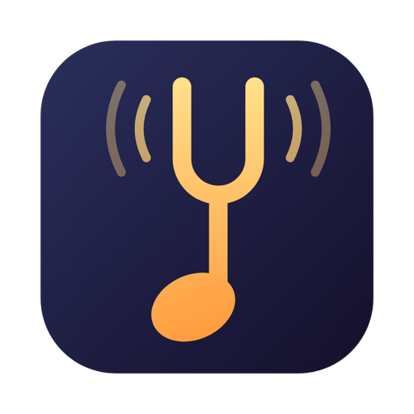
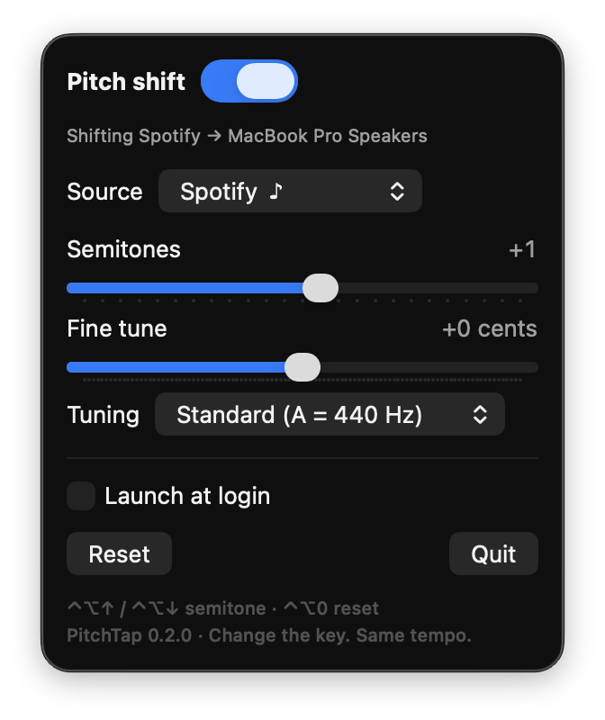

Change the key of any song on your Mac
PitchTap is a free pitch shifter for macOS. Move Spotify, Apple Music, YouTube or your whole Mac up or down in pitch, live, and the tempo stays the same.
Download for MacFree and open source · macOS 14.4+ · Apple silicon · Source on GitHub
What it's for
- 🎤 Singing and karaokeDrop a song a couple of semitones so the chorus fits your voice.
- 🎸 Playing alongTranspose a recording to a key you know, or match your instrument's tuning. The capo fret is shown for you.
- 🎧 Just for funHear a song an octave lower, or retune it to A = 432 Hz.

Private by design
Your audio is changed on your own Mac as it plays. Nothing is recorded, saved or sent anywhere. No account, no tracking.
Questions
How do I change the key of a song on Spotify on a Mac?
Open PitchTap from the menu bar, choose Spotify as the source, and press − or +. Each step is one semitone. Spotify keeps playing at its normal speed, just in the new key. The same works for Apple Music, YouTube in any browser, or any other app.
Can I change the pitch without changing the tempo?
Yes, that's all PitchTap does. The pitch moves up to an octave either way (±12 semitones, plus ±50 cents for fine tuning), and the speed never changes.
Which apps does it work with?
Any app that plays sound: Spotify, Apple Music, Safari, Chrome, YouTube, video calls, or all system audio at once. You can shift one app and leave everything else alone.
Is it really free?
Yes. PitchTap is open source under the GPL-3.0 licence, with no ads, account or in-app purchases. It updates itself.
macOS says it can't verify PitchTap. Is that safe?
That warning appears because PitchTap isn't signed with a paid Apple developer certificate. Click Done, then Open Anyway in System Settings › Privacy & Security. You only do this once. Step-by-step guide.